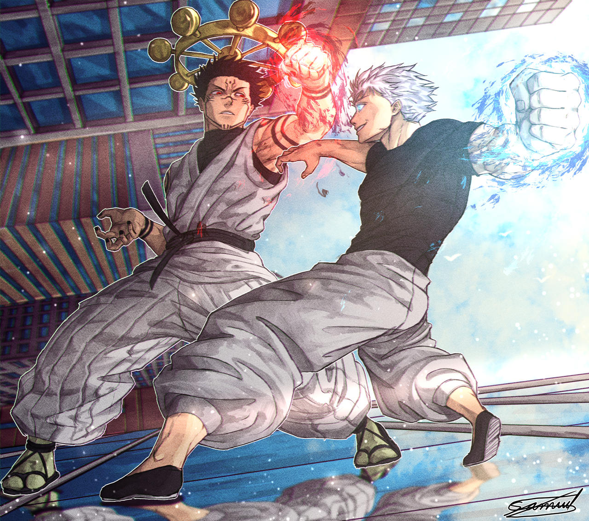
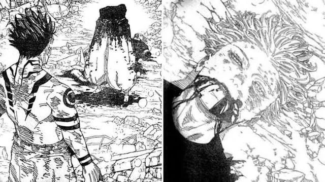
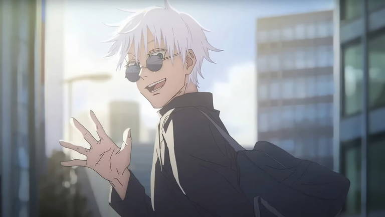

Tras la batalla contra Sukuna, el enfrentamiento entre los dos hechiceros más poderosos del mundo llegó a un punto culminante. Gojo Satoru, con su dominio del Infinito y su vasto conocimiento del jujutsu, desafió a Sukuna en un combate que sacudió los cimientos de todo lo que los rodeaba. Ambos desataron técnicas de alto nivel, poniendo en juego no solo su fuerza física, sino también su inteligencia estratégica. Gojo logró poner a Sukuna en una posición complicada más de una vez, demostrando por qué era considerado una leyenda viviente.
Sin embargo, Sukuna no era un enemigo cualquiera. Con su dominio del Malevolent Shrine y su capacidad para adaptarse y contrarrestar las tácticas de Gojo, la batalla tomó un giro inesperado. A pesar de la habilidad superior y la confianza de Gojo, Sukuna encontró una forma de superar sus técnicas, logrando finalmente una herida crítica que resultó fatal para el hechicero más fuerte.
Gojo no debió haber muerto. No solo porque era el pilar fundamental del equilibrio de poder entre las fuerzas del bien y las maldiciones, sino porque su presencia inspiraba a otros a ser más fuertes, a superar sus límites. Gojo era mucho más que una figura poderosa; era una guía y un símbolo de esperanza para sus estudiantes y para el mundo del jujutsu. Su muerte deja un vacío enorme, y muchos sienten que su partida no solo marca una derrota física, sino también una pérdida espiritual que podría haberse evitado.
